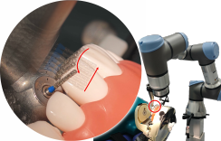
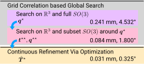
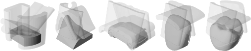
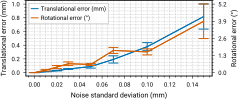
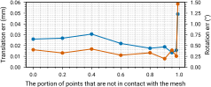
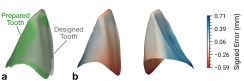
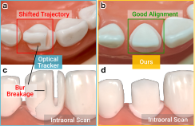

Probe-aware Evidence
Contacts are interpreted through the swept volume of the probe, while free-space observations constrain where object surface cannot be.
IEEE ICRA 2026
Probe-aware registration via complementary-shape docking
Tsinghua University · Tsingscribe Medical Ltd. · ETH Zurich · Peking University School and Hospital of Stomatology

Accurate alignment between a prior object model and the real scene is critical for high-precision robotic manipulation. Instead of relying on optical tracking, long calibration chains, or fragile point correspondences, this work treats the problem as complementary-shape docking between the object and the swept volume of a physical probe.
The formulation uses both contact and non-contact evidence and explicitly models probe geometry. A global-to-local search explores pose hypotheses with 3D FFT correlation over SO(3) samples, then refines the result continuously in SE(3) with analytic contact sensitivities.

Contacts are interpreted through the swept volume of the probe, while free-space observations constrain where object surface cannot be.
Registration becomes a shape matching problem between the object model and the probe-induced complementary volume.
Low-discrepancy SO(3) sampling and 3D FFT correlation provide broad exploration before Lie-algebra SE(3) refinement.
In simulation over free-form meshes, the method reaches metric-grade accuracy and remains robust under pose noise and contact loss. On a tooth-preparation robot, it achieves 0.42 mm and 3.75 deg error, outperforming an optical-tracker registration setup without requiring external sensors.
The key practical advantage is a calibration-free registration strategy that uses the robot's own contact interaction as the sensing signal.

Five free-form meshes with cylindrical probe sweep trajectories.

Stable registration under practical Gaussian pose noise.

Reliable results even when most trajectory points are non-contact.

Prepared tooth geometry closely follows the designed preparation.

The contact-based result avoids the optical calibration-chain failure.
@misc{chen2026swept,
title={From swept contact to pose: Probe-aware registration via complementary-shape docking},
author={Chen, Chen and Li, Yunwen and Xu, Yifan and Yan, Xiangjie and Shu, Chang and Hou, Jianxia and Song, Shiji and Li, Xiang},
year={2026},
eprint={2605.21398},
archivePrefix={arXiv},
primaryClass={cs.RO}
}